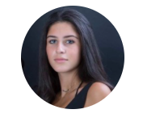

Bienvenue sur mon Portfolio !

Étudiante en deuxième année à l’INSEEC School of Business and Economics, j'approfondis ma formation en Marketing Digital via une alternance dans un laboratoire pharmaceutique. "Choisissez un travail que vous aimez et vous n'aurez pas à travailler un seul jour de votre vie." - Confucius.
Découvrez le site de l'entreprise
Formation
Bac Scientifique - Marseille - 2016
Classe préparatoire ECS - Marseille - 2016 à 2018
École de commerce Master Marketing Digital - INSEEC Lyon - 2018 à 2021
Semestre académique Digital & Business Innovation - INSEEC Londres - 2020
Expériences
Chargée de Communication Digitale chez Danyberd - Marseille - Juin 2016
Volontaire Marketing chez Bioderma - Lyon - Septembre à Juin 2018
Stage assistante Marketing Digital chez La Tropézienne Bakery - Los Angeles - Mai à Juin 2018
Alternance en Marketing Digital chez Aguettant - Lyon - Septembre 2020 à Septembre 2021
Passions
Le voyage : pour découvrir de nouveaux endroits, apprendre et tester de nouvelles choses.
La danse : pour mieux s'extérioriser en musique.
Les réseaux sociaux : pour partager son quotidien, suivre ses amis en direct, se divertir.
La décoration : pour s'exprimer à travers le design.